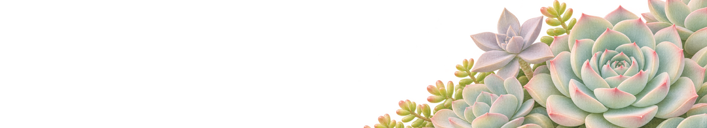

エケベリア
バラの花びらのようなロゼット中心から放射状に葉が重なる、多肉植物の定番。品種によって葉のふちが赤やピンクに染まります。
代表例
桃太郎・七福神・チワワエンシス など

中心から放射状に葉が重なる、多肉植物の定番。品種によって葉のふちが赤やピンクに染まります。
丸くて小さな葉がこんもり茂るタイプ。とても丈夫で増えやすく、寄せ植えの彩りにもよく使われます。
厚みのある葉にたっぷり水を蓄える丈夫な仲間。取れた葉から新しい芽が出やすく、増やす楽しさも抜群です。
葉の白い粉（ブルーム）は強い日差しや水を弾く日焼け止め。指で拭うと元に戻らないので、そっとしておきましょう。
秋から冬にかけて、よく日に当てて水を控えめにすると、葉先からピンクや赤へ鮮やかに色づきます。
元気な葉を根元からきれいに外して乾いた土に置いておくと、数週間で小さな根と赤ちゃん芽が出てきます。